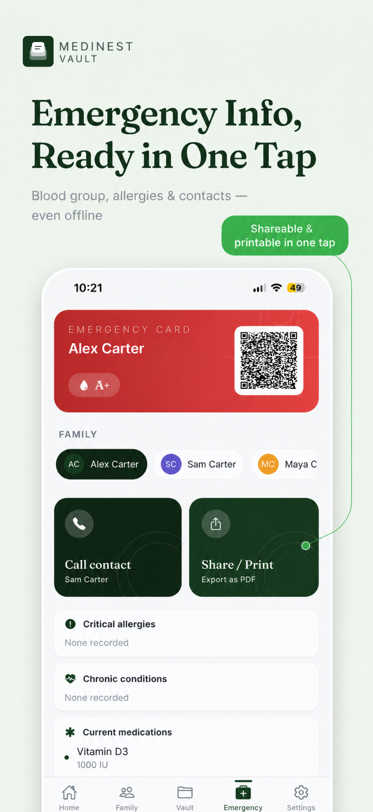

Family & Caregiving
Managing an Aging Parent's Medical Info Remotely
Elderly parent care often means coordinating multiple prescriptions, several specialists, and a growing list of conditions — sometimes from a different city entirely. MediNest gives your parent their own profile in your family vault, so their medications, appointments, and records are visible whether you're in the next room or a flight away.

What makes elderly parent care harder to track
Older adults tend to accumulate more prescriptions, more specialists, and more chronic conditions over time than any other family member — and often more resistance to a new app that's "just for them." MediNest keeps their profile in the same shared vault as the rest of the family, so tracking their care doesn't require them to manage a separate account, or you to check a separate app.
What to set up first
- •Current medications. Every prescription with dosage and schedule, so refill timing and adherence are visible.
- •Chronic conditions and allergies. Documented once, surfaced automatically at every appointment and on the emergency card.
- •Insurance and Medicare or Medicaid supplement cards. Filed in the insurance vault, ready for any provider visit.
- •An emergency card. Blood group, allergies, and a contact — accessible even if your parent can't explain their own history in the moment.
Frequently asked questions
How can I keep track of an aging parent's medications if I don't live nearby?
Add your parent as a family member profile in MediNest, log their medications and schedule, and turn on reminders. You can check whether doses were logged from anywhere their profile is accessible.
What information matters most for elderly parent care?
Current medications and dosages, chronic conditions, allergies, upcoming appointments, and an emergency card with blood group and contacts are the essentials most caregivers rely on daily.